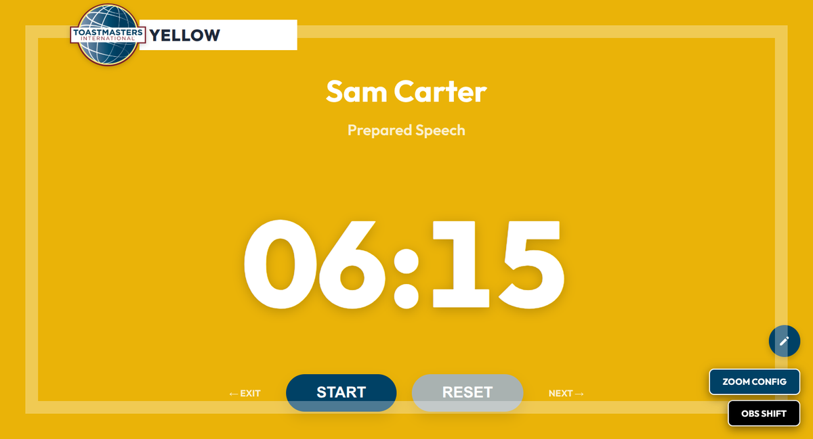
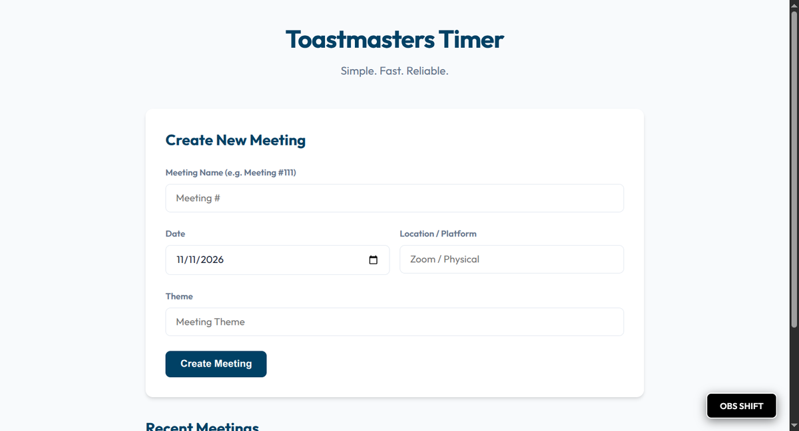
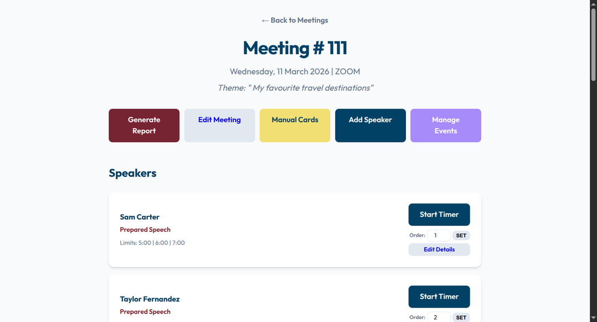
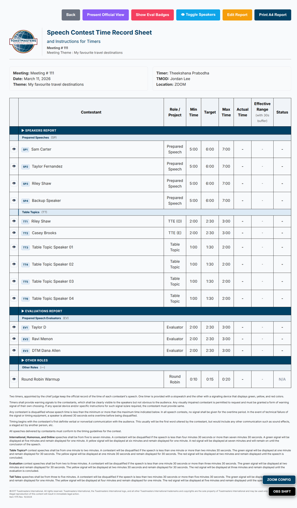

Toastmasters Timer
A web app that lets the club Timer run live meeting timing, manage the speaker roster and print the report, all from a browser on a projector screen.
- PHP
- MySQL
- Docker
- GitHub Actions
- RoleDesigner and developer
- Used forVoice Your Dream Toastmasters Club meetings
- StackPHP 8.2, MySQL, Docker
- HostingShared hosting via GitHub Actions FTP
The problem
Toastmasters meetings are time-sensitive. Agendas change at the last minute, speakers swap places, and the Timer has to signal the whole room without losing focus. Paper sheets invite errors, and a generic stopwatch knows nothing about roles or thresholds.
I built this to fix three things: a flexible roster, colour signals everyone can see, and an automatic report.
How it works



Colour cards
Role-specific thresholds drive a full-screen card everyone in the room can read.
Flexible roster
Type a sequence number to move anyone; conflicts resolve automatically. Edit names, roles and times inline.
Round Robin
A 20-second limit with a single clean red cue and no early alerts.
A4 report
One click gives a print-ready report with out-of-time highlighting.
Custom roles
Save your own event types, such as a Q&A session, with their own thresholds.
Accounts and limits
Each user sees only their own meetings. Retention limits and export-before-delete keep free hosting tidy.
Setting up a meeting


Timing rules
| Role | Green | Yellow | Red |
|---|---|---|---|
| Prepared Speech | 5:00 | 6:00 | 7:00 |
| Ice Breaker Speech | 4:00 | 5:00 | 6:00 |
| Table Topic | 1:00 | 1:30 | 2:00 |
| Evaluator | 2:00 | 2:30 | 3:00 |
| Round Robin | n/a | n/a | 0:20 |
| Custom | configurable | configurable | configurable |
The report

Under the hood
- Plain PHP, JavaScript and CSS, with no framework to maintain.
- The stopwatch runs in the browser, so timing does not depend on the network.
- Thresholds come from role definitions stored in the database.
- Docker Compose for a one-command local setup; deployed to shared hosting by a GitHub Actions FTP job.
- Hardened for shared hosting: blocked source folders, HTTPS redirect, per-account data.
Screenshots show sample data and the Toastmasters International logo, which belongs to Toastmasters International.